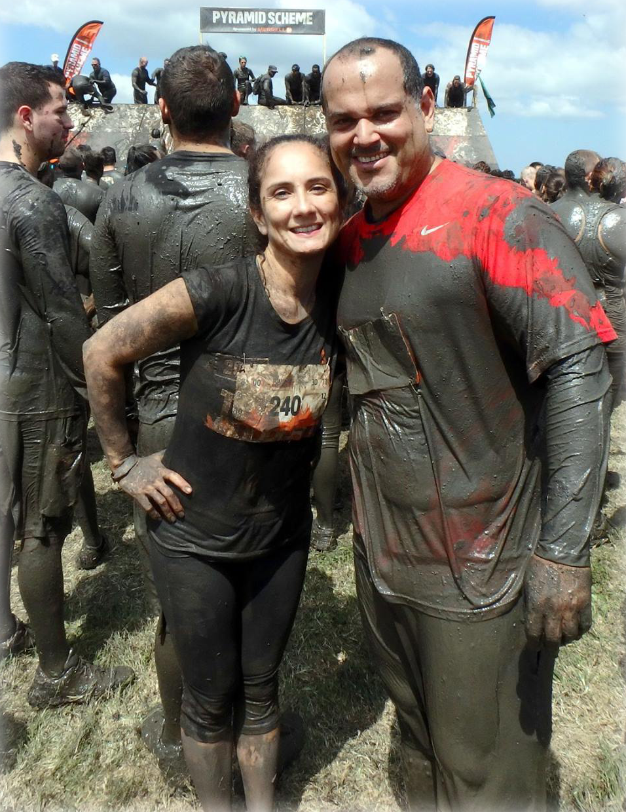

Jenny and Stew Lodondo member spotlight for May, 2017

Names: Jenny and Stew Lodondo
How long have you been CrossFitting? About 5 years on and off for both of us.
What's your favorite lift/movement
Jenny - I'd have to say candlesticks because you really have to focus on your core to do them right.
Burpees because it's a total body workout. And box step-ups because I feel it’s the one move that really
forced me to strengthen my weaker leg.
Stew - WallBalls and rowing.
What is your favorite CrossFit memory? (specifically, with your spouse)
Jenny - Favorite CrossFit memory would have to be the first team WOD Stu and I did together.
We argued the whole time but I feel it pushed us both to work a little harder during the WOD.
Stew - I feel the same as Jenny team WOD or as Jenny and I like to call it, The Fight WOD has to be my favorite CrossFit memories.
What advice would you give to other CrossFit couples/families?
Jenny - Keep working out together. Motivate and push each other to become stronger and better athletes together.
Stew - Make time to get in the Gym no matter what.